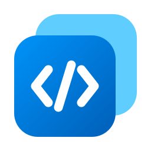

<Win>Dex Tải về Mã nguồn
WinDex đọc cây UI Automation của bất kỳ cửa sổ nào đang mở, để bạn lấy đúng
AutomationId cần dùng thay vì mò toạ độ chuột.
Miễn phí, mã nguồn mở, chạy hoàn toàn offline. Không gửi gì ra ngoài máy.
Là tìm ra cái nút kia tên gì. Script automation hỏng không phải vì logic sai, mà vì nó bấm vào toạ độ
(412, 268) — rồi người dùng đổi độ phân giải. WinDex cho bạn cái tên bền hơn toạ độ.
Phím tắt chạy toàn hệ thống, không cần WinDex đang là cửa sổ hoạt động. Nó tự mở đúng cửa sổ và chọn đúng node trong cây.
Viền vẽ thẳng lên element trên màn hình. Chuột xuyên qua được nên không chặn thao tác của bạn với app đang soi.
Bấm Invoke để xem cái nút có phản ứng không. Đặt giá trị để xem ô nhập có nhận không. Biết được điều đó trước khi mở editor tiết kiệm cả buổi.
Cây của app lớn có hàng nghìn node. Lọc theo tên hoặc ControlType để tìm. Xuất JSON rồi diff hai lần chạy để biết bản cập nhật đã đổi những gì.
WinDex đọc xem element hỗ trợ pattern nào rồi sinh đúng lời gọi cho thư viện bạn dùng. Bấm sao chép, dán vào script.
import uiautomation as auto win = auto.WindowControl(ClassName='Notepad', Name='Untitled — Notepad') el = win.EditControl(AutomationId='RichEditD2DPT') el.GetValuePattern().SetValue('Xin chào')
from pywinauto import Desktop win = Desktop(backend='uia').window(class_name='Notepad', title='Untitled — Notepad') el = win.child_window(auto_id='RichEditD2DPT', control_type='Edit') el.set_edit_text('Xin chào')
using FlaUI.Core.AutomationElements; using FlaUI.UIA3; using var automation = new UIA3Automation(); var win = automation.GetDesktop().FindFirstChild(cf => cf.ByClassName("Notepad")); var el = win.FindFirstDescendant(cf => cf.ByAutomationId("RichEditD2DPT")); el.AsTextBox().Text = "Xin chào";
Add-Type -AssemblyName UIAutomationClient, UIAutomationTypes $root = [Windows.Automation.AutomationElement]::RootElement $winCond = New-Object Windows.Automation.PropertyCondition( [Windows.Automation.AutomationElement]::ClassNameProperty, 'Notepad') $win = $root.FindFirst('Children', $winCond) $elCond = New-Object Windows.Automation.PropertyCondition( [Windows.Automation.AutomationElement]::AutomationIdProperty, 'RichEditD2DPT') $el = $win.FindFirst('Descendants', $elCond) $el.GetCurrentPattern([Windows.Automation.ValuePattern]::Pattern).SetValue('Xin chào')
Hầu hết thao tác đi qua pattern của UI Automation — nói thẳng với control chứ không giả lập chuột hay bàn phím. App đích không mất focus, con trỏ của bạn không nhảy đi đâu.
| Thao tác | Cơ chế | Lấy focus của app đích |
|---|---|---|
| Invoke | InvokePattern | Không |
| Toggle | TogglePattern | Không |
| Đặt giá trị | ValuePattern | Không |
| Chụp ảnh | PrintWindow | Không, kể cả khi cửa sổ bị che |
| Gửi phím | SendInput | Có — phím chỉ đến được element đang giữ focus |
Bản mới nhất được dựng tự động từ nhánh main. Chọn bản portable nếu chỉ muốn chạy thử.
Chạy ngay, không cài đặt, không để lại gì trong registry.
Bộ cài NSIS, có shortcut Start menu và mục gỡ cài đặt.
Cần Windows 10 trở lên và Microsoft Edge WebView2 Runtime — Windows 11 đã có sẵn, bộ cài tự tải về nếu thiếu. File chưa ký số nên lần đầu mở SmartScreen sẽ cảnh báo: chọn More info → Run anyway.